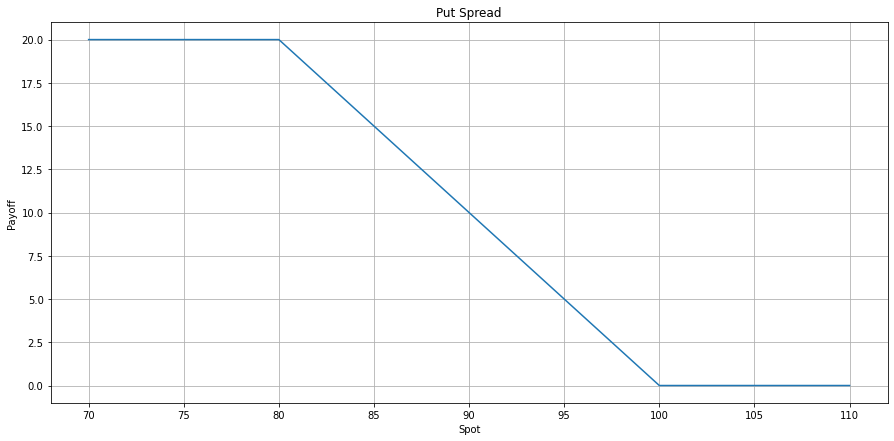

[18]:
import pandas as pd
import matplotlib.pyplot as plt
import seaborn as sns
# load dataframe, python dataframe
df = pd.read_table('/Users/luyu/CLionProjects/qlib-doc/source/codes/payoff.md', skip_blank_lines=True,sep='|').dropna(axis = 'columns')
df = df.drop(0)
df
[18]:
| spot | value | |
|---|---|---|
| 1 | 70 | 20 |
| 2 | 71 | 20 |
| 3 | 72 | 20 |
| 4 | 73 | 20 |
| 5 | 74 | 20 |
| 6 | 75 | 20 |
| 7 | 76 | 20 |
| 8 | 77 | 20 |
| 9 | 78 | 20 |
| 10 | 79 | 20 |
| 11 | 80 | 20 |
| 12 | 81 | 19 |
| 13 | 82 | 18 |
| 14 | 83 | 17 |
| 15 | 84 | 16 |
| 16 | 85 | 15 |
| 17 | 86 | 14 |
| 18 | 87 | 13 |
| 19 | 88 | 12 |
| 20 | 89 | 11 |
| 21 | 90 | 10 |
| 22 | 91 | 9 |
| 23 | 92 | 8 |
| 24 | 93 | 7 |
| 25 | 94 | 6 |
| 26 | 95 | 5 |
| 27 | 96 | 4 |
| 28 | 97 | 3 |
| 29 | 98 | 2 |
| 30 | 99 | 1 |
| 31 | 100 | 0 |
| 32 | 101 | 0 |
| 33 | 102 | 0 |
| 34 | 103 | 0 |
| 35 | 104 | 0 |
| 36 | 105 | 0 |
| 37 | 106 | 0 |
| 38 | 107 | 0 |
| 39 | 108 | 0 |
| 40 | 109 | 0 |
| 41 | 110 | 0 |
[19]:
df.spot = df.spot.astype(float)
df.value = df.value.astype(float)
#start draw graph
fig, ax = plt.subplots(figsize=(15, 7))
plt.plot(df.spot, df.value)
plt.xlabel('Spot')
plt.ylabel('Payoff')
plt.grid(True)
plt.title("Put Spread")
plt.show()
